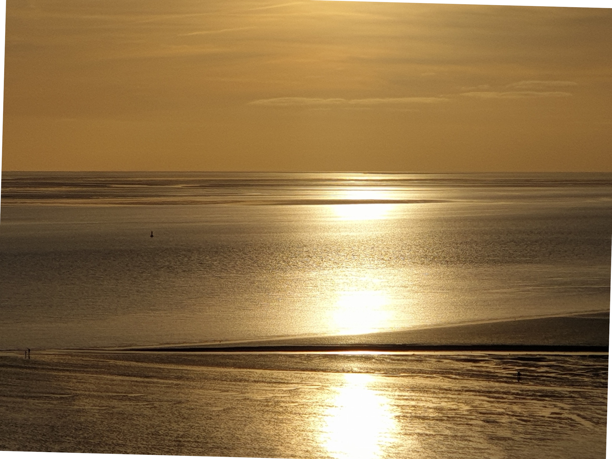

Hier darf es langsamer werden.


Sinnwärts Studio
Nicht alles, was sich wie ein persönliches Problem anfühlt,
ist auch eines.
Manches ist eine verständliche Reaktion
auf ein Leben, das zu schnell, zu voll
oder zu lange fordernd war.
Hier geht es um Regulation.
Und um einen ruhigen Blick auf das, was gerade wirkt.
Was genau meint Regulation – und warum ist sie gerade jetzt so wichtig?
Regulation bedeutet, innere Zustände wahrzunehmen
und ihnen so zu begegnen,
dass sie wieder tragfähig werden.
Nicht durch Kontrolle.
Sondern durch Verstehen, Tempo raus, Grenzen – und Kontakt.
Warum gerade jetzt?
Gerade jetzt ist das wichtig,
weil viele Menschen dauerhaft gefordert sind –
ohne echte Pausen, ohne Resonanz, ohne Orientierung.
Wenn Systeme schneller werden,
braucht das Nervensystem etwas anderes:
Zeit, Einordnung – und einen ruhigen Blick.
Nicht, um langsamer zu werden.
Sondern um wieder handlungsfähig zu sein.